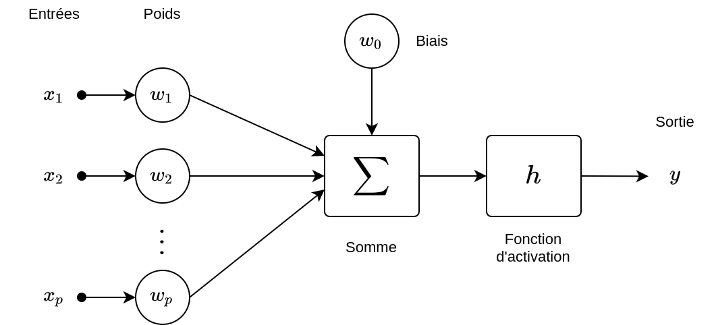
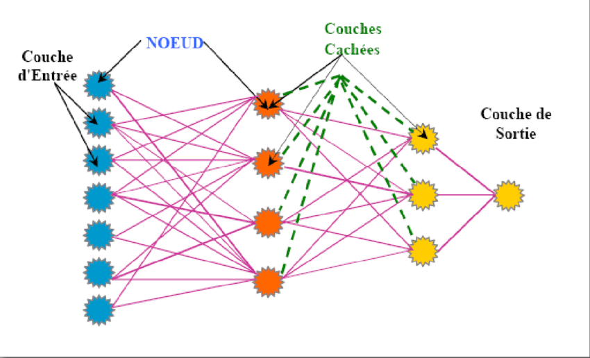
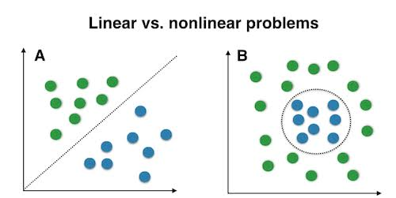

Malheureusement, la nature n'est pas uniquement linéaire, et ce modèle a des limites. On ne peut pas toujours se contenter d'ajouter et de multiplier des coefficients pour avoir le bon résultat. Il faut faire appel à ce qu'on appelle la non-linéarité, c'est-à-dire des opérations qui plus complexes que l'addition et la multiplication. Cela permettra au modèle d'apprendre des patterns de prédiction plus compliqué. C'est ici que naissent les réseaux de neurones.
Comme on peut l'intuiter par le nom, le réseau de neurones est composé de briques élémentaires appelées neurones . Ce modèle est un modèle relativement simple par rapport à la complexité du neurone humain. On l'a dit précédemment, l'objectif est d'ajouter de la non-linéarité, alors, les neurones sont simplement des modèles linéaires auxquels on rajoute une composante non linéaire, appelée fonction d'activation.

Ils prennent en entrée plusieurs informations différentes, qu'ils pondèrent avec des coefficients, appelés cette fois-ci des poids, puis les ajoutent comme notre modèle linéaire. Cette fonction d'activation permet de créer de la non-linéarité, on pourrait aussi dire de la complexité.
On appelle cela alors un réseau de neurones, ils sont séparés en couches cachées qui correspondent à un groupe de neurones qui partagent la même entrée et dont la sortie sera envoyée à la prochaine couche de neurones.On l'a vu, la non-linéarité est essentielle. Mais illustrons ça un peu plus en détail. Voici deux ensembles de données différents, que l'on aimerait utiliser pour prédire des phénomènes.

Imaginons que l'on cherche à savoir si un nouveau point appartienne aux points verts ou rouges. Le modèle linéaire ne sera pas capable d'apprendre autre chose qu'une séparation claire via une droite des deux ensembles. Le deuxième problème n'est pas résolvable avec un modèle linéaire. Les réseaux de neurones vont déformer cette frontière, chercher une relation plus complexe qu'une simple droite. Ici par exemple, un réseau de neurones sera capable d'apprendre la circularité de la frontière, soit, une non-linéarité.